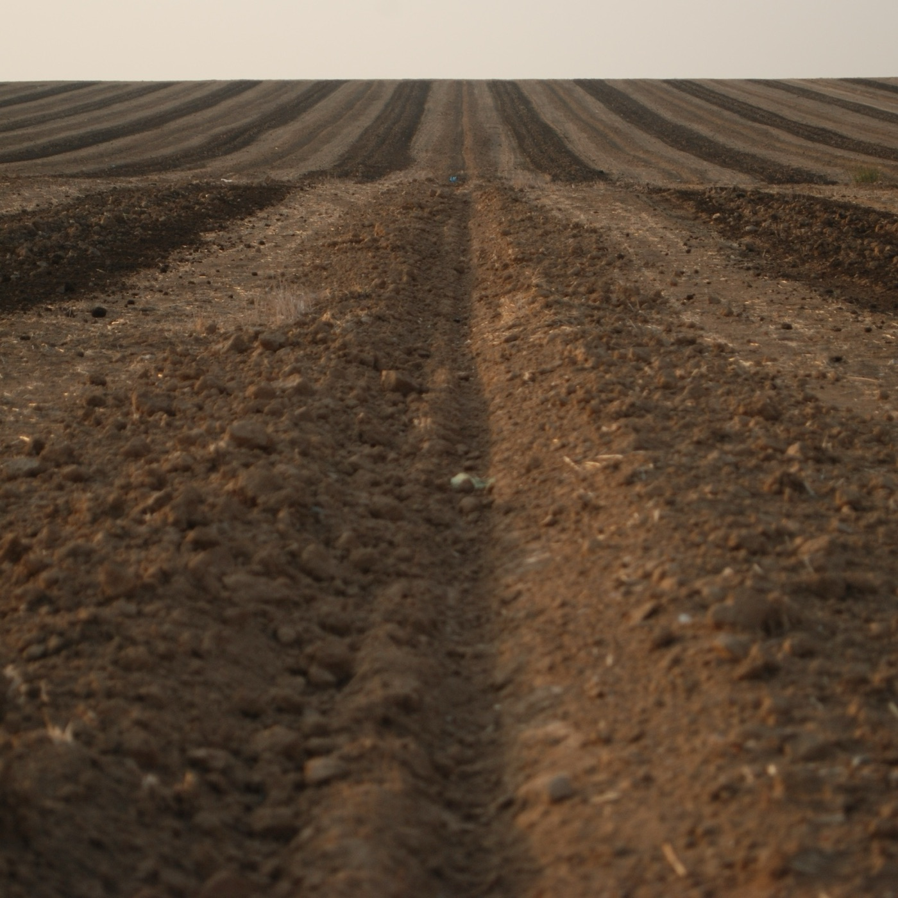
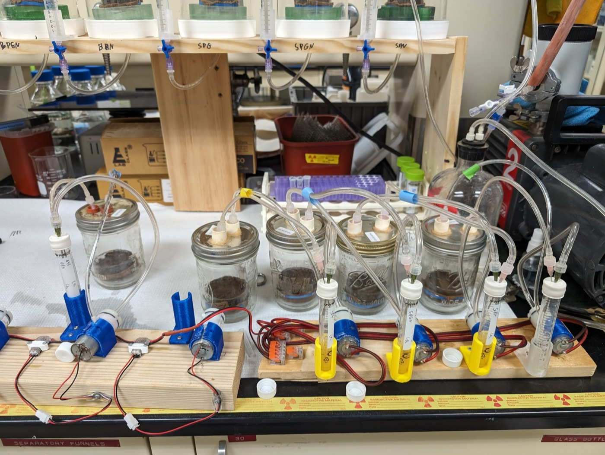
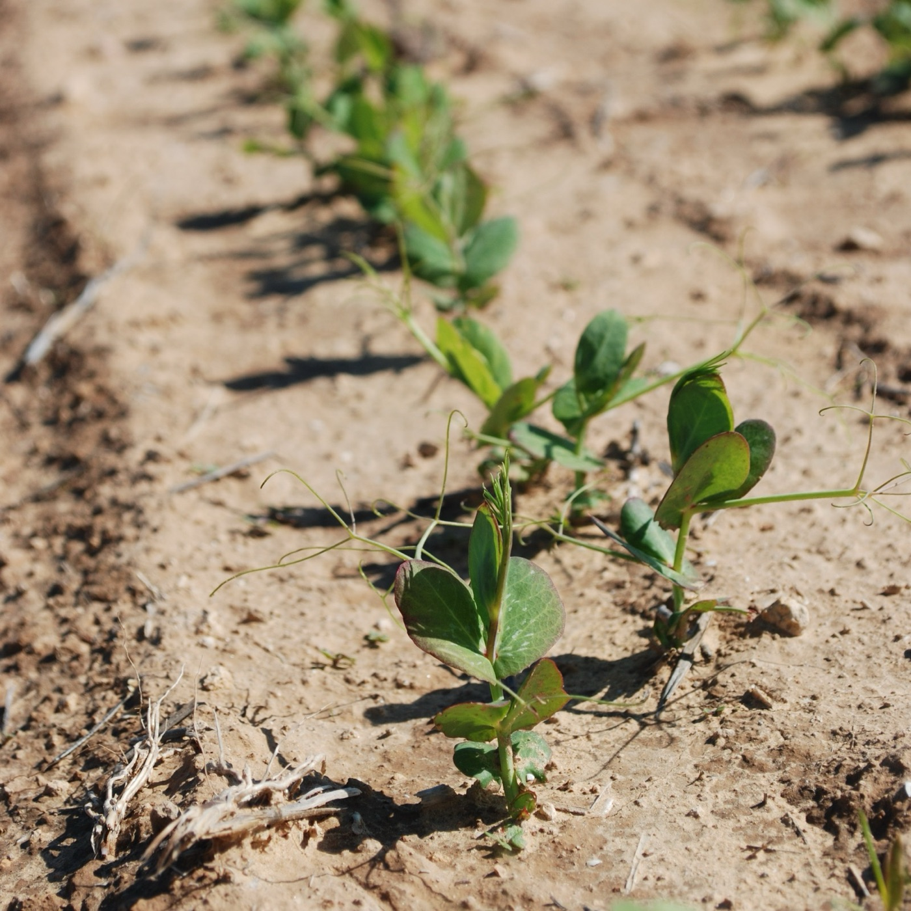

Structure
Soil Structure & Pore Architecture
Understanding pore structure as a key regulator of soil processes and ecosystem function.

We study the physical, chemical, and biological processes that govern soil carbon cycling, ecosystem functions, and health.
Carbon storage, microbial activity, root-microbiome interactions, and water movement are deeply interconnected. Much of this is governed by soil structure: the physical arrangement of pores, particles, and interfaces. We bridge structural and biogeochemical approaches to understand soils as integrated systems, from individual pores to agricultural fields.
Our researchFrom the field down to organic matter on mineral surfaces, the processes we study play out across ten orders of magnitude, and the scales overlap.



Understanding pore structure as a key regulator of soil processes and ecosystem function.

Processing, stabilization, sequestration, and greenhouse gas dynamics.

Developing spatially resolved quantitative methodologies to study intact soil systems.

How management practices shape soil structure and agricultural sustainability.